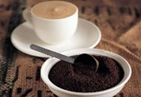
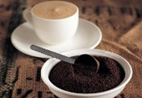

理性派：意大利浓缩咖啡 可爱派：卡布奇诺咖啡 自然派：拿铁咖啡

甜美系：摩卡咖啡 唯美系：康宝蓝咖啡 贵族系：皇家咖啡

地址：河南省东源市沁安路一环东路爱尚咖啡大厦 电话：0391-114514 备案号：豫ICP备114514号
|
|
| 咖啡物语 |
其实，咖啡的口味亦如每个人的性格，可爱甜美系或许喜欢卡布奇诺的绵密口感和可爱图文，而自然派或许更喜欢拿铁随意的风情，快来看看，哪一款咖啡是你心头所好。  理性派：意大利浓缩咖啡 可爱派：卡布奇诺咖啡 自然派：拿铁咖啡
甜美系：摩卡咖啡 唯美系：康宝蓝咖啡 贵族系：皇家咖啡 |
| 爱尚文化 | |
| 咖啡种类 |
|
| 咖啡DIY |
|
| 您的建业 | |
| 联系我们 | |
|
|
| Copyright© 2008-2010 All Right Reserved Powered by Asamiya 地址：河南省东源市沁安路一环东路爱尚咖啡大厦 电话：0391-114514 备案号：豫ICP备114514号 |
|